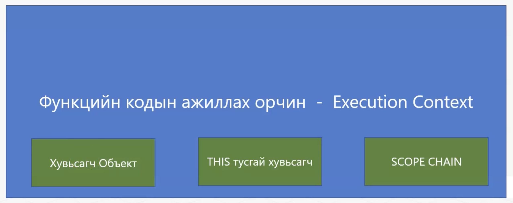
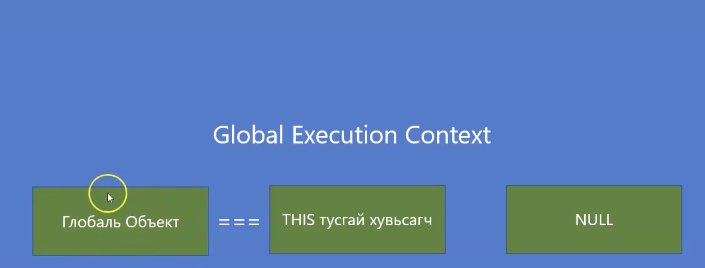
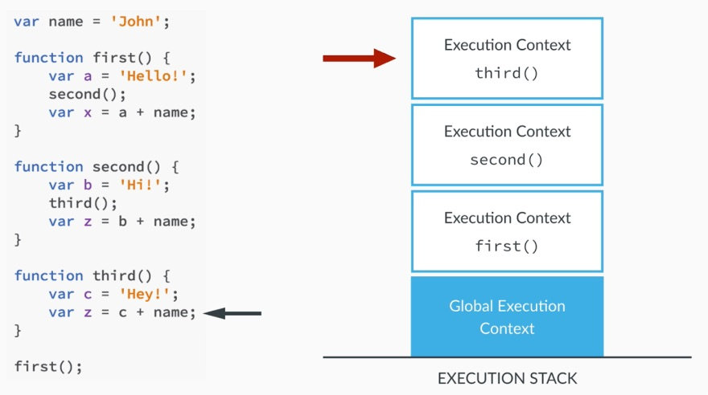
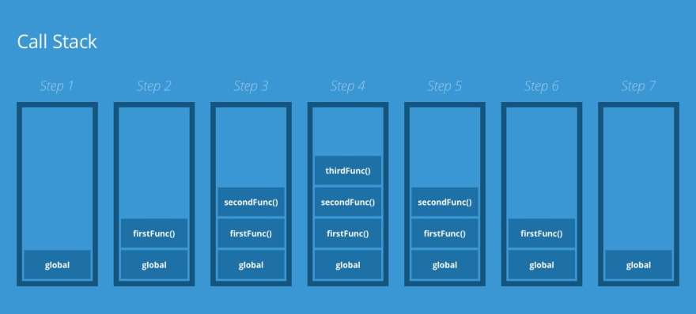
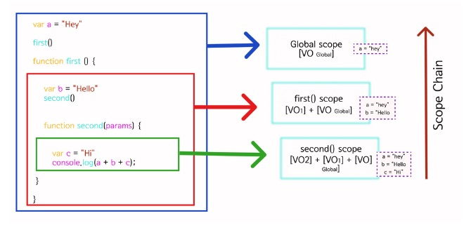

Lesson 30
Кодын ажиллах Execution context болон Execution Stack-ийг ойлгох
Execution context: Ямар нэг Javascript -ийн функц ажиллахад үүсдэг 3
зүйл

Global execution context: Local функц ажиллахад үүсдэг 3 зүйл -тэй ижил
Global түвшинд үүсдэг

Execution stack:


